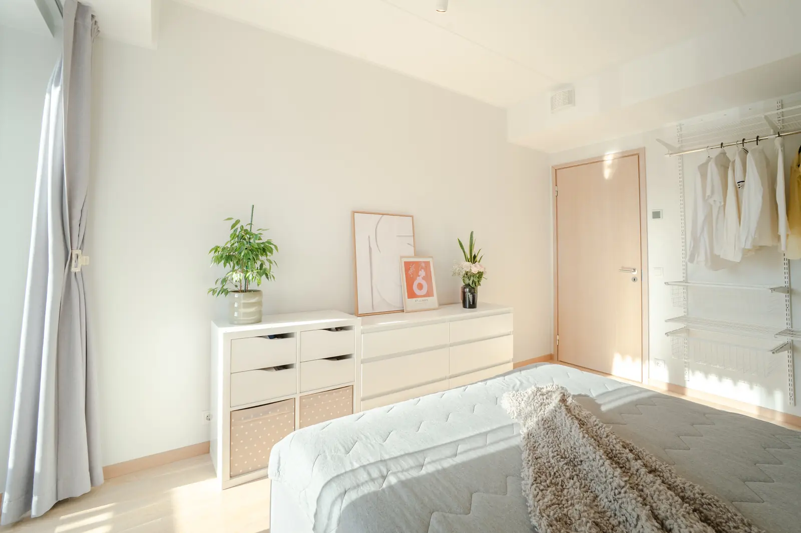

Kinnisvarakuulutuse tekst: mida kirjutada ja mida mitte
Lühivastus
Alusta faktidest, mitte omadussõnadest. Ostja tahab teada pinda, ruumide arvu, korrust, maja ehitusaastat, kütet ja kommunaalkulusid. Alles seejärel tuleb see, mis kodu eriliseks teeb. Ja ütle ausalt, mis on tegemata – see säästab sind näitamistest, mis oleksid niikuinii eitusega lõppenud.
Fotod panevad ostja kuulutust avama. Tekst otsustab, kas ta helistab. Ja enamik kuulutusi kukub siin läbi ühel ja samal moel: nad kirjeldavad tundeid, kui ostja otsib fakte.
Ülesehitus, mis töötab
- Üks lause, mis ütleb, mis see on. „Renoveeritud kolmetoaline korter Tartus Karlovas, teisel korrusel, oma parkimiskohaga.“ Kogu olulisim info ühes reas.
- Faktid. Pind, ruumide arv, korrus ja korruseid kokku, maja tüüp ja ehitusaasta, seisukord, küte, kommunaalkulud talvel ja suvel, remondifond, lift, parkimine, panipaik.
- Ruumide kirjeldus. Lühidalt ja loogilises järjekorras, nagu majja sisenedes.
- Asukoht ostja keeles. Mis on jalutuskäigu kaugusel: pood, kool, lasteaed, peatus, park. Nimeta konkreetsed kohad, mitte „hea asukoht“.
- Mis on hiljuti tehtud. Aknad, katus, torustik, elekter – koos aastaarvuga.
- Mis on tegemata. Aus lõik, mis säästab kõigi aega.
- Praktiline info. Millal saab vabaks, kas müüakse mööbliga, kuidas näitamine kokku lepitakse.
Konkreetsus võidab omadussõnu
Võrdle kahte lauset:
| Nõrk | Tugev |
|---|---|
| Hubane ja valgusküllane korter | Aknad lõunasse, päike toas pärastlõunani |
| Suurepärane asukoht | Kaubamajani 5 minutit jalgsi, bussipeatus maja ees |
| Maja on heas korras | Katus vahetatud 2021, aknad 2019, torustik 2018 |
| Avar köök | Köök 14 m², mahub kuue kohaga söögilaud |
| Rahulik piirkond | Tänav on tupiktänav, läbivat liiklust ei ole |
Parempoolsed on kõik kontrollitavad. Just seepärast nad usutavad ongi.
Sõnad, mis kuulutust nõrgestavad
- „Peab ise nägema“ – ostja loeb seda kui „fotod on halvad“.
- „Unikaalne võimalus“ – ei tähenda midagi.
- „Hinnaläbirääkimised võimalikud“ – ütleb, et hind on liiga kõrge, enne kui keegi küsibki.
- „Nõuab veidi kätt“ – kirjuta selle asemel, mis täpselt tegemata on.
- LÄBIVAD SUURTÄHED JA HÜÜUMÄRGID – mõjuvad kiirustavalt, mitte veenvalt.

Miks puudustest kirjutada
See tundub müügile vastu töötavat, aga praktikas on vastupidi. Kui kirjutad ausalt, et vannituba on tegemata ja aknad ootavad vahetamist, juhtub kaks asja:
- Osa huvilisi ei helistagi. Need on need, kes oleksid niikuinii näitamiselt eitusega lahkunud – ja iga selline näitamine on sinu jaoks kadunud õhtu.
- Need, kes helistavad, tulevad kohale õigete ootustega. Läbirääkimised on lühemad ja rahulikumad, sest üllatusi ei tule.
Ausus teeb ka teksti ülejäänud osa usutavaks. Kuulutus, kus on ainult head, ei ütle lugejale midagi. Kuulutus, kus on üks aus miinus, muudab kõik plussid usaldusväärseks.
Pikkus
Umbes 150–300 sõna. Piisavalt, et faktid ära mahuksid, lühike, et telefonis läbi loetaks. Tükelda tekst lõikudeks – seinana kirjutatud kuulutust ei loe keegi lõpuni.
Väike nipp. Kirjuta kuulutus valmis ja loe see läbi, kujutades end ostjana, kes vaatab korraga kaheksat sarnast korterit. Iga lause, mis võiks sama hästi olla ka nende seitsme juures, on tühi lause.
Kui tekst on valmis, tasub üle vaadata ka fotode järjekord – nad peaksid jutustama sama lugu samas järjekorras. Sellest kirjutasime eraldi.
Fotod korda? Korterid alates 85€, eramajad alates 109€, pildid käes 48 tunniga ja sobivad kõikidesse portaalidesse.
Vaata hindu